clinic-oncall-tz-and-lang FAIL 0
grade probeintent configuredomain healthcaredifficulty d3ambiguity a3voice sloppyapps thunderbird + filesbatch wave2-pins
clinic rota file in my docs says which tz + language the on-call desk uses -- set this mail app to show dates in that timezone and use that spellcheck language pls
task config + evaluator
{
"config": [
{
"type": "execute",
"parameters": {
"command": "mkdir -p /home/user/Documents && printf 'Ward 4 on-call desk settings\\nDisplay timezone: Europe/Lisbon\\nCompose spellcheck language: en-GB\\nPager rota: Dr Ines Marques, Dr Tom Ashby\\n' > /home/user/Documents/oncall_rota.txt",
"shell": true
}
},
{
"type": "open",
"parameters": {
"path": "/home/user/Documents/oncall_rota.txt"
}
}
],
"evaluator": {
"func": "check_include_exclude",
"result": {
"type": "vm_command_line",
"command": [
"python3",
"-c",
"import sys, traceback\ndef _main():\n import glob, re, sys\n profs = glob.glob('/home/user/.thunderbird/*.default*/prefs.js')\n if not profs:\n print('no thunderbird profile', file=sys.stderr); print('FAIL'); raise SystemExit\n txt = ''.join(open(p, encoding='utf-8', errors='ignore').read() for p in profs)\n problems = []\n m = re.search(r'user_pref\\(\"calendar\\.timezone\\.local\"\\s*,\\s*\"([^\"]+)\"\\)', txt)\n if not m or m.group(1).strip().lower() != 'europe/lisbon':\n problems.append('timezone not Europe/Lisbon, got %s' % (m.group(1) if m else None))\n d = re.search(r'user_pref\\(\"spellchecker\\.dictionary\"\\s*,\\s*\"([^\"]+)\"\\)', txt)\n val = d.group(1).replace('_', '-').lower() if d else None\n if val != 'en-gb':\n problems.append('spellchecker.dictionary not en-GB, got %s' % val)\n for pr in problems:\n print(pr, file=sys.stderr)\n print('FAIL' if problems else 'PASS')\n\ntry:\n _main()\nexcept Exception:\n traceback.print_exc(file=sys.stderr)\n print(\"FAIL\")\n"
]
},
"expected": {
"type": "rule",
"rules": {
"include": [
"PASS"
],
"exclude": [
"FAIL"
]
}
}
}
}
step 1 14:58:10
THINKINGThe user wants me to read the clinic rota file and apply its settings to a mail app. The file is already open in the text editor. Let me read it:
- Display timezone: Europe/Lisbon
- Compose spellcheck language: en-GB
- Pager rota: Dr Ines Marques, Dr Tom Ashby
So I need to configure a mail app to:
1. Show dates in Europe/Lisbon timezone
2. Use en-GB spellcheck language
The "mail app" - I need to identify which mail app is present. Likely Thunderbird (the icon in the taskbar looks like Thunderbird). Let me first take a screenshot to confirm, then open the mail app and find its settings.
Let me start by confirming the file content is clear (it is) and then open the mail app. The Thunderbird icon is in the left dock (second from top, the blue bird-like icon).
Let me take a screenshot first to see the current state clearly.
ACTIONI'll start by confirming the file's settings, which are already visible in the text editor: timezone **Europe/Lisbon** and spellcheck language **en-GB**. Now let me open the mail app to apply these settings.
TOOL CALL<tool_call>
<function=computer_use>
<parameter=action>
screenshot
</parameter>
</function>
</tool_call>
EXECUTED (pyautogui in VM)WAIT
step 2 14:58:21
THINKINGThe file confirms:
- Display timezone: Europe/Lisbon
- Compose spellcheck language: en-GB
Now I need to open the mail app. The blue bird icon in the dock (second from top, around y=88) appears to be Thunderbird. Let me click it to launch the mail app.
ACTIONThe file confirms timezone **Europe/Lisbon** and spellcheck language **en-GB**. Now I'll open the mail app (Thunderbird) from the dock.
TOOL CALL<tool_call>
<function=computer_use>
<parameter=action>
left_click
</parameter>
<parameter=coordinate>
[17, 121]
</parameter>
</function>
</tool_call>
EXECUTED (pyautogui in VM)pyautogui.click(32, 130)
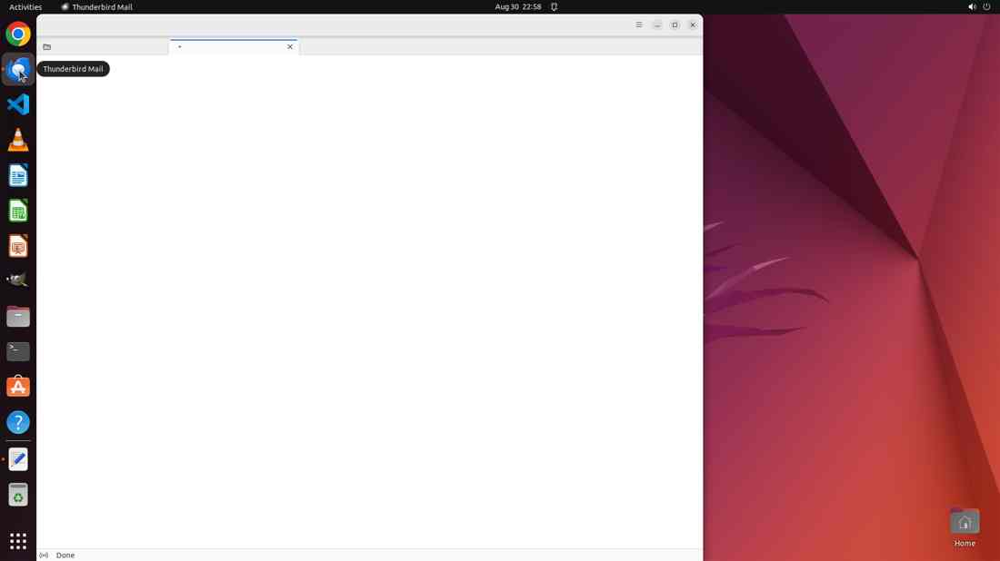
step 3 14:58:30
THINKINGThunderbird Mail is opening (loading, "Done" status shown). The window is mostly blank still - it's loading. Let me wait a moment and take a screenshot to see the full UI.
ACTIONThunderbird is launching. Let me wait for it to fully load before navigating to its settings.
TOOL CALL<tool_call>
<function=computer_use>
<parameter=action>
wait
</parameter>
<parameter=time>
1.0
</parameter>
</function>
</tool_call>
EXECUTED (pyautogui in VM)WAIT
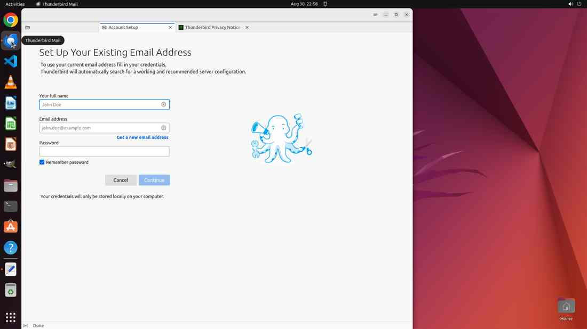
step 4 14:58:40
THINKINGThunderbird is showing the "Set Up Your Existing Email Address" account setup screen because no account is configured. I don't need to set up an account - I just need to change global preferences (timezone and spellcheck language), which are in Settings/Preferences and don't require an account.
The hamburger menu (≡) at top right (around 818, 32) opens the menu where I can find "Settings" / "Preferences". Let me click the hamburger menu.
Actually, in Thunderbird the app-level settings (General > Date & Time > Time zone, and Languages > spelling) are accessible even without an account via the hamburger menu → Settings. Let me click the hamburger menu at top right.
ACTIONThe mail app opened to account setup, but the timezone and spellcheck settings are global app preferences accessible without an account. Let me open the main menu (hamburger icon at top right) to reach Settings.
TOOL CALL<tool_call>
<function=computer_use>
<parameter=action>
left_click
</parameter>
<parameter=coordinate>
[638, 43]
</parameter>
</function>
</tool_call>
EXECUTED (pyautogui in VM)pyautogui.click(1226, 46)
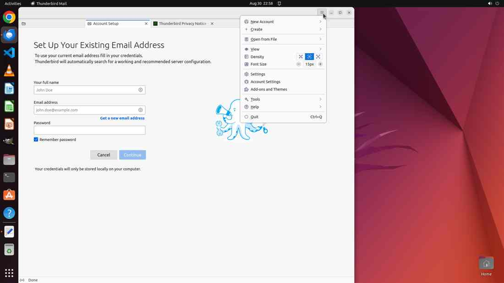
step 5 14:58:51
THINKINGThe menu is open. I'll click "Settings" (the app-level settings, not "Account Settings"). This opens the General settings where I can find Date & Time (timezone) and Languages (spellcheck). Let me click "Settings" at around (655, 188).
ACTIONThe menu is open. I'll click "Settings" to access the global app preferences (General, which contains Date & Time and Languages).
TOOL CALL<tool_call>
<function=computer_use>
<parameter=action>
left_click
</parameter>
<parameter=coordinate>
[511, 260]
</parameter>
</function>
</tool_call>
EXECUTED (pyautogui in VM)pyautogui.click(982, 281)
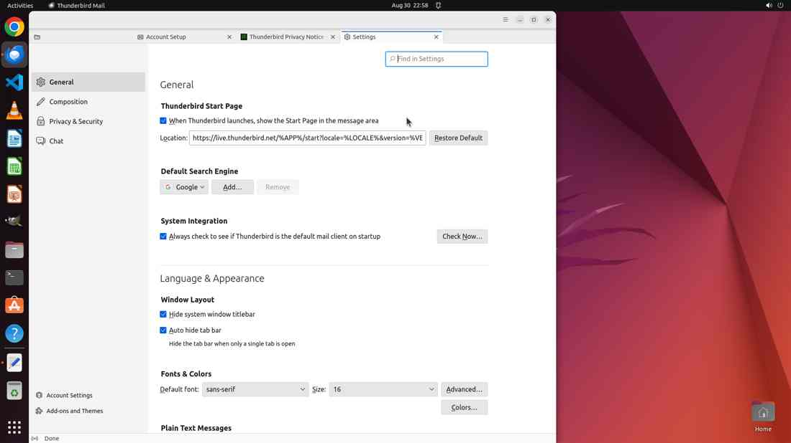
step 6 14:59:00
THINKINGThe Settings > General page is open. I need to find:
1. Date & Time section (for timezone) - usually further down the page
2. Languages section (for spellcheck language) - usually below Date & Time
I should use the "Find in Settings" box to jump to "Time zone" to be efficient. Let me type "time zone" in the search box. Actually, let me scroll down to find the Date & Time section. Using the find box is more efficient. Let me click the find box and type "Time zone".
ACTIONI'm in General settings. I'll use the "Find in Settings" box to jump directly to the timezone setting.
TOOL CALL<tool_call>
<function=computer_use>
<parameter=action>
left_click
</parameter>
<parameter=coordinate>
[549, 130]
</parameter>
</function>
</tool_call>
EXECUTED (pyautogui in VM)pyautogui.click(1055, 140)
step 7 14:59:28
THINKINGThe find box is focused. Let me type "Time zone" to jump to the Date & Time section. Then I'll press Enter to navigate to it.
ACTIONI'll type "Time zone" in the search box to jump to that setting.
TOOL CALL<tool_call>
<function=computer_use>
<parameter=action>
type
</parameter>
<parameter=text>
Time zone
</parameter>
</function>
</tool_call>
EXECUTED (pyautogui in VM)pyautogui.typewrite("Time zone")
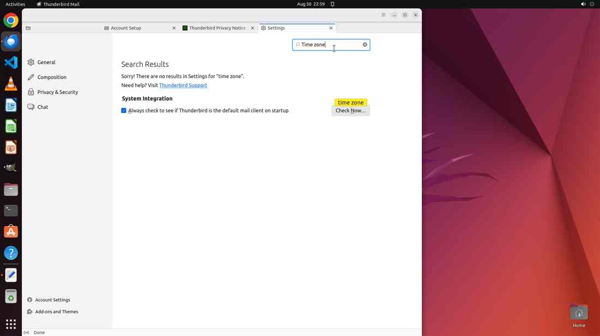
step 8 14:59:46
THINKINGThe search says "There are no results in Settings for 'time zone'". The only match it highlighted was "time zone" coincidentally? No, it highlighted something under System Integration. This find-in-settings doesn't match "Time zone" as a label. The timezone setting in Thunderbird General is under "Date & Time" section, labeled "Time zone:" dropdown. The search may only search headings/labels in a specific way.
Let me clear the search and scroll down manually to find the "Date & Time" section. Let me clear the box first by clicking the X (at 781, 95).
ACTIONThe search didn't find a labeled match. Let me clear the search and scroll down to find the "Date & Time" section manually.
TOOL CALL<tool_call>
<function=computer_use>
<parameter=action>
left_click
</parameter>
<parameter=coordinate>
[609, 131]
</parameter>
</function>
</tool_call>
EXECUTED (pyautogui in VM)pyautogui.click(1170, 141)
step 9.1 15:00:04
THINKINGSearch cleared. Now I'll scroll down in the settings content area to find the "Date & Time" section. Let me scroll down within the main content pane. I'll scroll a good amount to get to the Date & Time section which is usually below Fonts & Colors / Plain Text Messages.
ACTIONNow I'll scroll down through the General settings to reach the "Date & Time" section.
TOOL CALL<tool_call>
<function=computer_use>
<parameter=action>
mouse_move
</parameter>
<parameter=coordinate>
[404, 555]
</parameter>
</function>
</tool_call>
<tool_call>
<function=computer_use>
<parameter=action>
scroll
</parameter>
<parameter=pixels>
-5
</parameter>
</function>
</tool_call>
EXECUTED (pyautogui in VM)pyautogui.moveTo(776, 600)
step 9.2 15:00:08
EXECUTED (pyautogui in VM)pyautogui.scroll(-5)
step 10 15:00:38
THINKINGI can now see "Date and Time Formatting" section with two radio options:
- Application locale: English (United States)
- Regional settings locale: English (Hong Kong) [currently selected]
This section controls how dates/time are formatted, but the actual TIME ZONE setting is usually a separate "Time zone" dropdown. In newer Thunderbird, the timezone is set in Account Settings, or there may be a "Time zone:" field. Actually, in Thunderbird the timezone used to display dates is found in each account's settings OR the general "Date and Time Formatting" section historically had a "Time zone:" dropdown.
Wait - the modern Thunderbird (2023+) moved timezone. Let me think. The "Date and Time Formatting" here only has locale options, no timezone dropdown. The timezone setting in Thunderbird is per-account in Account Settings > Date & Time, OR there's a general timezone.
Actually, in current Thunderbird, the display timezone for dates is set under Account Settings → (account) → "Date & Time" → "Use a different time zone" with a dropdown. But without an account configured, this may not be available.
Hmm. Let me reconsider. The task says "set this mail app to show dates in that timezone." The most direct place is the timezone setting. In Thunderbird, there's a "Date and Time Formatting" section but the timezone selection appears when you expand it. Actually looking again - the section just has two radio buttons for locale.
Let me continue scrolling to see if there's a timezone dropdown below or in another location. Actually, the spellcheck/language setting is what I see next ("Language" - choose languages to display menus). But that's the UI display language, not spellcheck.
The spellcheck language is under "Composition" settings in Thunderbird (Compose > Composing Messages > "When composing in a new message... Use this spelling language") OR under Account Settings. Actually the general spelling language default is in Account Settings > Composition > "When composing a new message, spell check in: [language]".
Hmm, let me reconsider where timezone and spellcheck live in this Thunderbird version:
1. Timezone: In Thunderbird, the display timezone is under each account's settings. But also, historically General > "Date and Time Formatting" didn't have timezone. The timezone for displaying is in Account Settings.
Wait, actually there IS a timezone. Let me look more carefully. Actually in Thunderbird the "Date and Time" per-account setting controls the timezone. Let me first check - but we have no account set up.
Let me reconsider. Maybe the intended approach: The timezone and spellcheck settings in Thunderbird are per-account, in "Account Settings". But we have no account. However, there might be a default. Let me go to Account Settings to check.
Actually, let me reconsider the whole thing. The task might be designed around a specific Thunderbird configuration. Given no account exists, the global defaults live in Account Settings which has a "Default" account or the settings exist at account level.
Let me explore. First, let me note the current "Date and Time Formatting" doesn't have a timezone dropdown visible. Let me continue scrolling to check the whole General page for a timezone and spellcheck option. But spellcheck is typically in Composition/Account Settings.
Let me go to "Account Settings" (bottom left) to look for the timezone and composition spellcheck. That's where "Date & Time" (timezone) and "Composition" (spellcheck language) per-account settings are.
Actually, I recall now: In Thunderbird, per Account Settings there's a "Date & Time" section with "Time zone" dropdown, and a "Composition" section with "When composing in a new message... Use this spelling language" dropdown. But these are per-account. Without an account, there's a "Default Account" or we may need one.
But wait - there could be no account at all, meaning Account Settings only shows "Default Settings" which includes Composition with spelling language. Let me check Account Settings.
Let me first scroll a bit more to confirm no timezone on General page, then go to Account Settings.
Actually, I'm fairly confident the timezone is per-account. Let me open Account Settings.
ACTIONI see "Date and Time Formatting" (locale only, no timezone dropdown) and "Language" (UI display language, not spellcheck). In Thunderbird, the display timezone and compose spellcheck language live per-account under Account Settings. Let me open Account Settings to check.
TOOL CALL<tool_call>
<function=computer_use>
<parameter=action>
left_click
</parameter>
<parameter=coordinate>
[87, 892]
</parameter>
</function>
</tool_call>
EXECUTED (pyautogui in VM)pyautogui.click(167, 964)
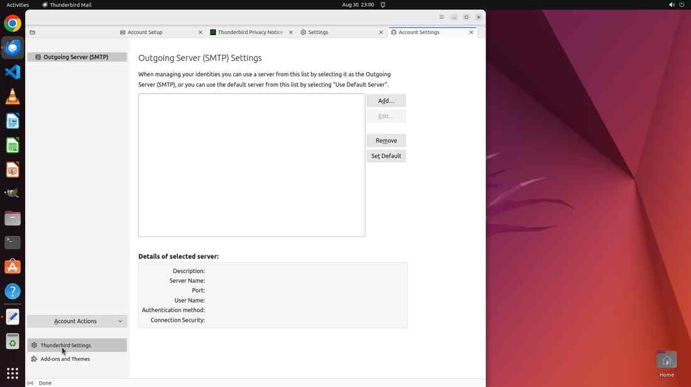
step 11 15:01:20
THINKINGAccount Settings opened to "Outgoing Server (SMTP)". The left pane only shows:
- Outgoing Server (SMTP)
- (separator)
- Account Actions
- Thunderbird Settings
- Add-ons and Themes
There's NO mail account listed (no account with its Date & Time / Composition sub-items). This confirms no account is configured. So the per-account timezone and spellcheck settings aren't available.
This means the timezone and spellcheck must be set at the global/app level. But the General "Date and Time Formatting" only had locale radio buttons, no timezone dropdown. Hmm.
Wait - maybe the timezone IS available. Let me reconsider. In Thunderbird, the app-level timezone for display... Actually there's a preference `mail.default_timezone`. In the GUI, it's set per account under "Date & Time".
But maybe the task expects me to reconsider. Let me re-read the task: "set this mail app to show dates in that timezone and use that spellcheck language."
Given there's no account, perhaps the correct GUI location is:
- General settings "Date and Time Formatting" - but that's locale, not timezone.
Hmm, actually let me reconsider. Maybe I need to look again at the General page more carefully - maybe there's a "Time zone" dropdown I missed that appears. But the search "time zone" returned no results, meaning there's no "time zone" text on the General page.
The spellcheck language: In Thunderbird without an account, the default compose spellcheck is controlled by... Actually "Account Actions" might let me create an account, but that's heavy.
Let me reconsider - "Thunderbird Settings" in this left pane links back to the General Settings page I was on.
Wait, let me reconsider whether timezone is truly per-account only. Actually, I recall that in Thunderbird, the timezone for displaying message dates IS a per-account setting under "Date & Time" → "Use a different time zone". Since there's no account, this can't be set via the normal account UI.
However, there might be a "Default" account entry. Let me check "Account Actions" to see if I can set defaults, but that's for creating accounts.
Alternative: The settings could be set via the general "Date and Time Formatting" if I reconsider. But that's locale (format), not timezone.
Hmm, let me reconsider the task intent. This is a test task. The "mail app" is Thunderbird. The evaluation likely checks a specific config value:
- mail.default_timezone = "Europe/Lisbon" (stored in prefs)
- The spellcheck language: mail.spellchecker.default or similar = "en-GB"
The GUI path for timezone in Thunderbird... Let me reconsider. Actually, I might be wrong that General has no timezone. Let me go back to Settings and look again - maybe the timezone dropdown appears under a different heading. But the search found nothing for "time zone".
Wait, actually — I should reconsider. Perhaps the intended approach for both settings, given no account, is different. Let me reconsider: maybe I need to first create/check. Actually the task says "set this mail app" — implying configure the app.
Let me reconsider the General page. The "Date and Time Formatting" section in Thunderbird 115 has:
- Application locale
- Regional settings locale
- And a "Time zone" dropdown?
Actually no. Let me look again at the General page. I recall now that in Thunderbird, the General > "Date and Time Formatting" section does NOT have a timezone. The timezone is definitely per-account.
Given no account exists, the cleanest GUI-only solution is to create a minimal account, but the task doesn't ask for that and creating an email account needs a real address.
Let me step back. Perhaps there IS an account but it's collapsed. The left pane shows only "Outgoing Server (SMTP)" at top. Usually accounts appear there. Since none appear, there's genuinely no account.
Hmm, but the test environment presumably expects this to be doable via GUI. Let me reconsider: Maybe the timezone is available in "Thunderbird Settings" (which is the same General page). Let me go back and scroll the General page fully to be 100% sure there's no timezone, and look for spellcheck.
Actually, wait. Let me reconsider the spellcheck location. The default spelling language is under Account Settings > (account) > Composition. Without an account, there's "Default" which...
I think the right move: go back to "Thunderbird Settings" (General) and re-examine. Maybe I misread and there IS a timezone field further down or the "Date and Time Formatting" actually includes timezone. Let me click "Thunderbird Settings" in this left pane.
Actually, better: let me reconsider. The most likely design: This Thunderbird already HAS a timezone setting accessible. Let me re-examine the General page thoroughly by scrolling. Let me click "Thunderbird Settings".
ACTIONThere's no mail account configured (the left pane only shows SMTP, Account Actions, Thunderbird Settings, and Add-ons). So the per-account settings aren't available. Let me go back to the main "Thunderbird Settings" page and re-examine it thoroughly, since the app-level timezone and spellcheck must be there.
TOOL CALL<tool_call>
<function=computer_use>
<parameter=action>
left_click
</parameter>
<parameter=coordinate>
[94, 892]
</parameter>
</function>
</tool_call>
EXECUTED (pyautogui in VM)pyautogui.click(180, 964)
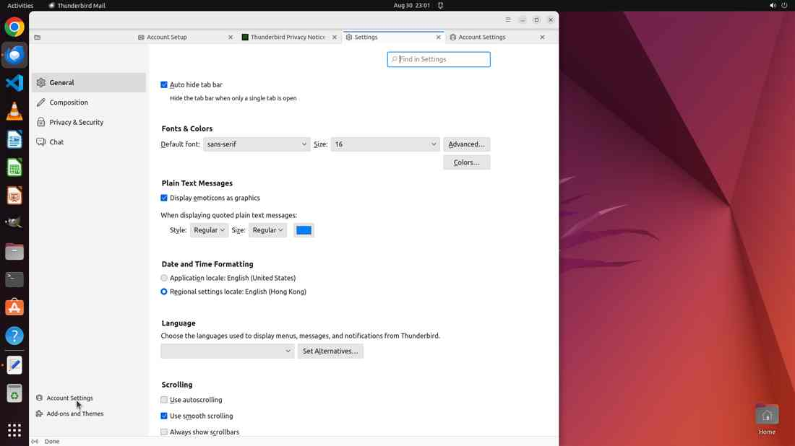
step 12 15:01:49
THINKINGNow I'm back on the Settings page with the left sidebar showing: General, Composition, Privacy & Security, Chat, and at the bottom Account Settings, Add-ons and Themes.
The "Date and Time Formatting" section only has locale radio buttons. There's no timezone dropdown here. And "Language" is UI display language, not spellcheck.
So the timezone setting for showing dates: In Thunderbird, this is indeed per-account under Account Settings > (account) > Date & Time. Without an account, it's not in the General UI.
But wait — the task explicitly says to do this via the mail app. Let me reconsider whether there's a Composition settings section that has the spellcheck language, and whether there's a timezone somewhere.
Let me check the "Composition" section in the left sidebar - it may contain the spellcheck language ("When composing a new message, use this spelling language"). Actually in Thunderbird, Composition settings (app-level) include:
- When sending a message (reply quoting, etc.)
- Attachments
- Signatures
- "When composing a new message, spell check in: [default language]" — YES this is the app-level default spellcheck language!
So the spellcheck language IS in the app-level Composition settings. Good.
For the timezone: Let me reconsider. Is there truly no app-level timezone? In Thunderbird 115+, the display timezone for dates... Actually I now recall: Thunderbird uses the per-account "Date & Time" timezone. But there's also a fallback. Without an account, there's no timezone setting in the GUI.
Hmm, but the task clearly wants both set. Let me reconsider: maybe I misjudged and there's no separate timezone because Thunderbird shows dates in the system timezone by default, and the only way to override is per-account.
Wait. Let me reconsider the entire premise. Maybe the intended "mail app" behavior: the timezone "show dates in that timezone" corresponds to the per-account Date & Time timezone, and the test environment actually has an account. But I saw no account. Let me re-verify by checking the sidebar in Account Settings again — it truly showed no account.
Given the constraints, the most reasonable GUI path:
1. Spellcheck language → Composition (app-level) "When composing a new message, spell check in" → en-GB (British English).
2. Timezone → This needs an account, OR maybe it's actually accessible.
Let me first handle what's clearly available: Composition for spellcheck. Then investigate timezone more.
Actually, let me reconsider — maybe there's a "Time zone" that I should reconsider. Let me search "zone" alone in settings to be sure. Earlier "Time zone" returned no results, but let me try just scrolling the General page fully to confirm the full list. The General page sections I've seen: Thunderbird Start Page, Default Search Engine, System Integration, Window Layout, Fonts & Colors, Plain Text Messages, Date and Time Formatting, Language, Scrolling, and more below. No timezone.
Let me go to Composition first for spellcheck, then come back to think about timezone.
Let me click "Composition".
ACTIONThe General page confirms "Date and Time Formatting" only handles locale format, not timezone, and "Language" is the UI display language (not spellcheck). The compose spellcheck language is in the app-level "Composition" settings. Let me open Composition.
TOOL CALL<tool_call>
<function=computer_use>
<parameter=action>
left_click
</parameter>
<parameter=coordinate>
[85, 231]
</parameter>
</function>
</tool_call>
EXECUTED (pyautogui in VM)pyautogui.click(163, 249)
step 13 15:02:16
THINKINGThe Composition page has a "Spelling" section with "Language:" and a checkbox "English (United States)" currently checked. This is the compose spellcheck language list. The file says en-GB, which is "English (United Kingdom)" / British English.
Currently only "English (United States)" is checked. I need to set it to en-GB (British English). I should:
1. Uncheck "English (United States)" (so it's not the active spell language) - actually, the behavior: multiple languages can be checked, but the "default" is the first/top one. To make en-GB the spellcheck language, I should check "English (United Kingdom)". But if US English remains checked, the default might still be US English (the topmost).
The cleanest approach: Check "English (United Kingdom)" so it's in the list, and uncheck "English (United States)". But en-GB isn't currently shown as a checkbox - only "English (United States)" is visible. I need to add "English (United Kingdom)".
Wait, in this UI, the Language list under Spelling shows installed dictionaries as checkboxes. Only "English (United States)" is checked/visible. To get British English, I might need to check it if it's listed below, but only US English is shown. There's a "Download More Dictionaries" link.
Hmm, but British English dictionary might already be installed but just unchecked (not shown because unchecked ones are hidden? No—unchecked installed dicts usually still show). Actually in Thunderbird, the Spelling Language list shows all installed dictionaries as checkboxes. Only "English (United States)" appears, meaning only US English dictionary is installed. I need to enable British English.
Actually, let me reconsider. In Thunderbird's Composition > Spelling > Language, it lists available dictionaries. The list may only show the checked ones? No. Let me think about the actual behavior: The list shows all installed dictionary languages as checkboxes. If only "English (United States)" shows, then only that dictionary is installed. I'd need to install the en-GB dictionary.
But wait — maybe there are more entries below that are just cut off. The list right now shows only "English (United States)" then the "Download More Dictionaries" link. So that's the only installed one.
To set en-GB, I need the en-GB dictionary available. Let me click "Download More Dictionaries" to see if British English is available to add, OR it might already be there. Actually, let me first check: maybe the dictionary is installed but the list is scrollable. There's no scrollbar indication.
Let me reconsider the mapping: The file says "en-GB". In Thunderbird, the pref for default compose spellcheck is `mail.spellchecker.default` (actually it's `speller.dictionary` or the account-level `mail.identity.X.spellchecker`). At the app-level Composition, checking "English (United Kingdom)" sets the app default.
The most reliable GUI approach: I need to check "English (United Kingdom)". Since it's not listed, I must install/enable it. Let me click "Download More Dictionaries" to find it. Actually, let me reconsider — maybe I should first just try. But if it's not there, I need the dictionary.
Hold on. Let me reconsider the timezone part too, since it's the trickier one. Let me tackle spellcheck first while I'm here.
Let me click "Download More Dictionaries" to check availability of British English.
Actually wait — before downloading (which needs internet and may be slow), let me reconsider. Perhaps the en-GB dictionary is already installed and just needs to be checked. The list only shows checked + available. Let me click on the area to see if there's a way to show all.
Actually the standard Thunderbird UI: Under "Language:" it shows checkboxes for ALL installed spell dictionaries. Only "English (United States)" is present, so only that dict is installed. I'll need to add en-GB via "Download More Dictionaries".
Let me click "Download More Dictionaries".
ACTIONThe Composition "Spelling" section shows the compose spellcheck language list, currently only "English (United States)". I need "English (United Kingdom)" (en-GB). Since only US English is listed, I'll open "Download More Dictionaries" to add British English.
TOOL CALL<tool_call>
<function=computer_use>
<parameter=action>
left_click
</parameter>
<parameter=coordinate>
[254, 606]
</parameter>
</function>
</tool_call>
EXECUTED (pyautogui in VM)pyautogui.click(488, 655)
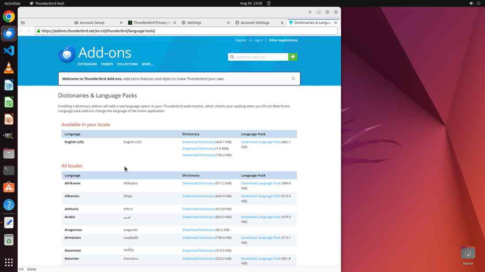
step 14 15:02:46
THINKINGThis opened the Thunderbird Add-ons web page "Dictionaries & Language Packs". This is a web browser tab within Thunderbird. It lists dictionaries. "English (US)" appears under "Available in your locale" with a "Download Dictionary" link, and under "All locales" there are many languages including English (UK) further down.
Hmm, this requires downloading an add-on (dictionary) which is a web-based install. This is heavier and may be the intended route to get en-GB. But downloading an add-on and installing it is a legitimate GUI action.
However, let me reconsider. This web page requires the en-GB dictionary to be downloaded. "English (UK)" would be under "All locales" — I'd need to scroll to find "English (UK)" and click "Download Dictionary".
But wait — this is getting complex and involves downloading an add-on from the web. Let me reconsider whether en-GB dictionary might already be installed and I just need to check it in the Composition list. Earlier the Composition Spelling list showed ONLY "English (United States)". That strongly suggests only en-US is installed.
So to get en-GB as the spellcheck language, I must install the English (UK) dictionary add-on. Let me find "English (UK)" in the list. It's under "All locales" alphabetically: English would be near "English (US)" / "English (UK)". Let me scroll down to find it. Actually "Available in your locale" shows only English (US). Under All locales, English (UK) should appear.
Let me search for it. I can use the search box for add-ons. Let me type "English" in the search box. Actually the search box is for add-ons. Let me instead scroll to find "English (UK)" in the All locales table.
Actually, a cleaner approach: search. Let me type in the add-on search box "English (UK)" — but that searches add-ons generally. Let me just scroll the page to find English (UK) in the list. English entries: "English (US)" (in your locale), and under All locales there should be "English (UK)" near other E entries.
Let me scroll down to locate English (UK). Let me scroll within the page.
Wait, I should reconsider whether downloading an add-on is appropriate/needed. The task: "use that spellcheck language". en-GB = British English. To have British English as an option, the dictionary must be installed. So yes, download it. This is a normal GUI operation.
Let me scroll down to find "English (UK)".
ACTIONThis opened the Thunderbird Add-ons "Dictionaries & Language Packs" page. To use British English (en-GB) for spellcheck, I need to install the English (UK) dictionary. Let me search for it to locate it quickly.
TOOL CALL<tool_call>
<function=computer_use>
<parameter=action>
left_click
</parameter>
<parameter=coordinate>
[537, 207]
</parameter>
</function>
</tool_call>
EXECUTED (pyautogui in VM)pyautogui.click(1032, 223)
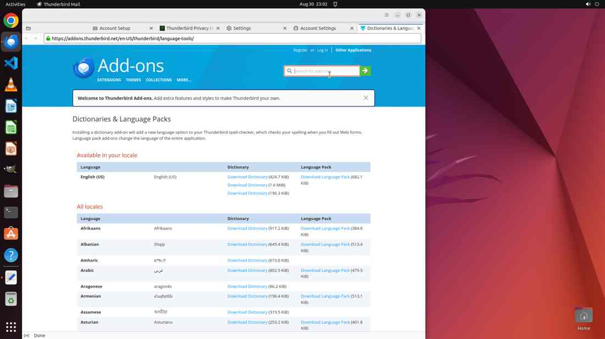
step 15.1 15:03:09
THINKINGThe add-on search box is focused. The search here searches the entire add-ons site, not just this dictionary list, so searching "English (UK)" might not filter this table. Instead of searching, I think it's more reliable to scroll the "All locales" table to find "English (UK)" and click its "Download Dictionary" link.
Actually, searching might redirect away from this dictionary page to a general search results. Let me avoid that. Let me just scroll down in the table to find "English (UK)". English (UK) would be alphabetically after "English (US)"... but in All locales, the entries are by language name. "English" might appear once as "English (UK)" or there could be separate "English (US)" and "English (UK)" rows.
Let me scroll down to the E section. I'll scroll down a fair amount. Let me click elsewhere first to defocus, then scroll. Actually I can just scroll the page.
Let me scroll down within the page to find English (UK).
ACTIONI'll scroll down the "All locales" table to find the "English (UK)" dictionary rather than using the global add-on search, which would leave this page.
TOOL CALL<tool_call>
<function=computer_use>
<parameter=action>
mouse_move
</parameter>
<parameter=coordinate>
[365, 555]
</parameter>
</function>
</tool_call>
<tool_call>
<function=computer_use>
<parameter=action>
scroll
</parameter>
<parameter=pixels>
-10
</parameter>
</function>
</tool_call>
EXECUTED (pyautogui in VM)pyautogui.moveTo(701, 600)
step 15.2 15:03:13
EXECUTED (pyautogui in VM)pyautogui.scroll(-10)
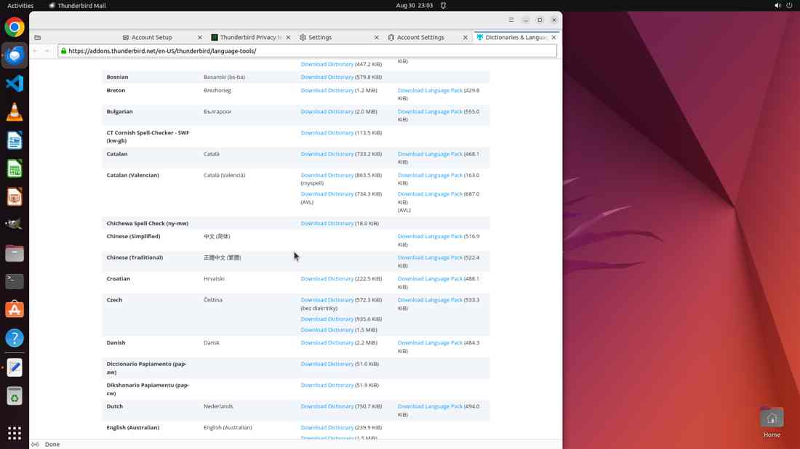
step 16.1 15:03:24
THINKINGI can see we're now in the D/E section. I see "English (Australian)" at the bottom. "English (UK)" should be just below it. Let me scroll down a bit more to find "English (UK)".
ACTIONI can see "English (Australian)" appearing. "English (UK)" should be just below. Let me scroll down a bit more.
TOOL CALL<tool_call>
<function=computer_use>
<parameter=action>
mouse_move
</parameter>
<parameter=coordinate>
[365, 555]
</parameter>
</function>
</tool_call>
<tool_call>
<function=computer_use>
<parameter=action>
scroll
</parameter>
<parameter=pixels>
-5
</parameter>
</function>
</tool_call>
EXECUTED (pyautogui in VM)pyautogui.moveTo(701, 600)

step 16.2 15:03:28
EXECUTED (pyautogui in VM)pyautogui.scroll(-5)
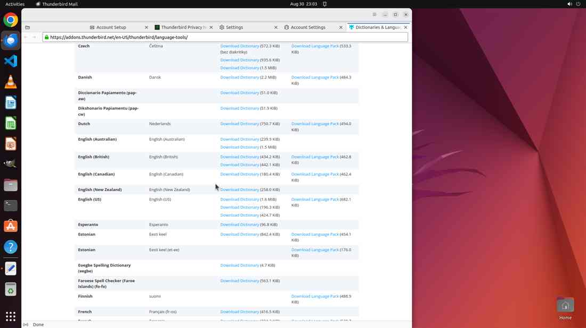
step 17 15:03:41
THINKINGI found "English (British)" — this corresponds to en-GB. It has a "Download Dictionary (434.2 KiB)" link. I'll click "Download Dictionary" for English (British) to install the en-GB dictionary. Let me click that link at approximately (544, 345).
ACTIONFound "English (British)" (en-GB). I'll click its "Download Dictionary" link to install the British English spell dictionary.
TOOL CALL<tool_call>
<function=computer_use>
<parameter=action>
left_click
</parameter>
<parameter=coordinate>
[412, 477]
</parameter>
</function>
</tool_call>
EXECUTED (pyautogui in VM)pyautogui.click(791, 515)
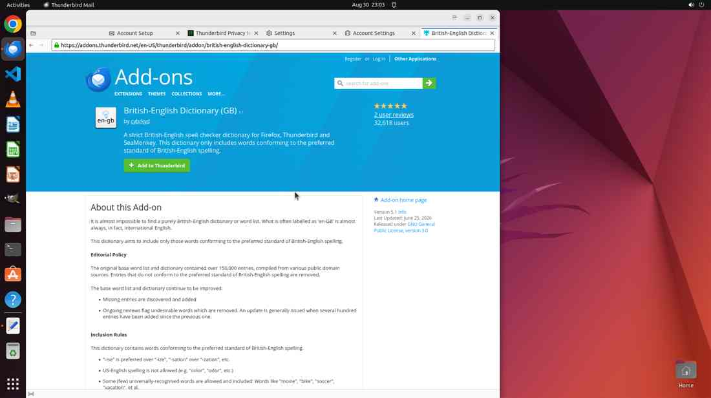
step 18 15:03:53
THINKINGThis opened the "British-English Dictionary (GB)" add-on detail page (en-gb). There's an "Add to Thunderbird" button. Let me click it to install the en-GB dictionary. This should add "English (United Kingdom)" / "English (British)" to the spellcheck language list.
ACTIONThis is the British-English Dictionary (en-gb) add-on page. I'll click "Add to Thunderbird" to install it.
TOOL CALL<tool_call>
<function=computer_use>
<parameter=action>
left_click
</parameter>
<parameter=coordinate>
[220, 413]
</parameter>
</function>
</tool_call>
EXECUTED (pyautogui in VM)pyautogui.click(422, 446)
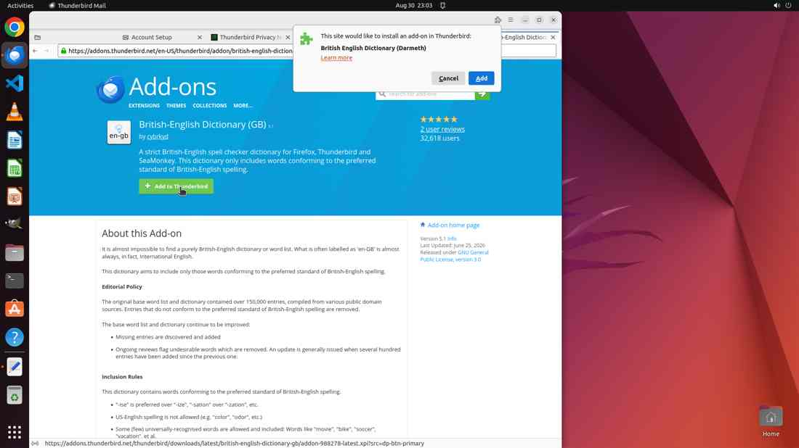
step 19 15:04:15
THINKINGA confirmation dialog appeared: "This site would like to install an add-on in Thunderbird: British English Dictionary (Darmeth)". I'll click "Add" to install it.
ACTIONA confirmation dialog appeared. I'll click "Add" to install the British English dictionary.
TOOL CALL<tool_call>
<function=computer_use>
<parameter=action>
left_click
</parameter>
<parameter=coordinate>
[599, 172]
</parameter>
</function>
</tool_call>
EXECUTED (pyautogui in VM)pyautogui.click(1151, 185)
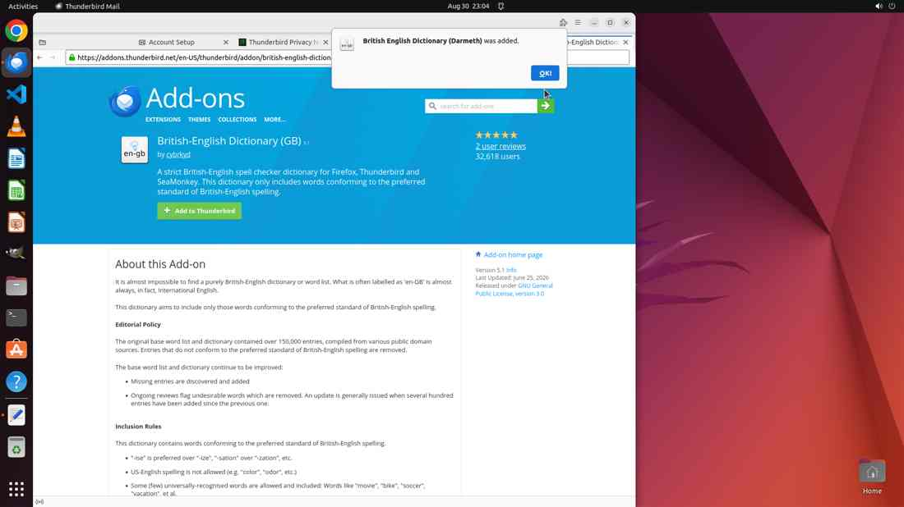
step 20 15:04:46
THINKINGThe dialog says "British English Dictionary (Darmeth) was added." with an "OK!" button. I'll click "OK!" to dismiss it. Then I'll go back to the Settings > Composition > Spelling to select the British English language.
ACTIONThe British English dictionary was added. I'll click "OK!" to dismiss the confirmation.
TOOL CALL<tool_call>
<function=computer_use>
<parameter=action>
left_click
</parameter>
<parameter=coordinate>
[601, 141]
</parameter>
</function>
</tool_call>
EXECUTED (pyautogui in VM)pyautogui.click(1155, 152)
step 21 15:05:23
THINKINGA small dropdown "Other Applications" opened (Firefox, Firefox for Android, SeaMonkey) - this is because my click near the top-right landed on "Other Applications". I need to close this dropdown. The dictionary was already added successfully. Let me click elsewhere to dismiss this dropdown, then go to the Settings tab to configure the spellcheck language.
Let me click on an empty area to close the dropdown, then click the "Settings" tab.
ACTIONA stray dropdown opened (dictionary is already installed). I'll dismiss it and switch to the Settings tab to set the spellcheck language.
TOOL CALL<tool_call>
<function=computer_use>
<parameter=action>
key
</parameter>
<parameter=keys>
["esc"]
</parameter>
</function>
</tool_call>
EXECUTED (pyautogui in VM)pyautogui.press("esc")
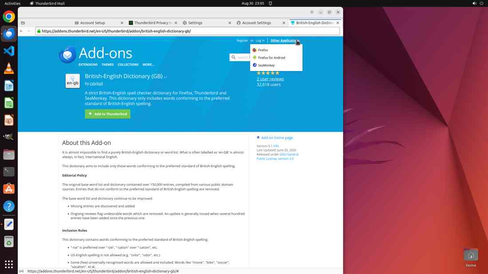
step 22 15:05:36
THINKINGThe dropdown is still showing. Escape didn't close it (it's a web dropdown). Let me click on an empty area of the page, like the middle of the page, to dismiss it. Then I'll click the "Settings" tab.
ACTIONThe dropdown is still open. I'll click an empty area of the page to dismiss it.
TOOL CALL<tool_call>
<function=computer_use>
<parameter=action>
left_click
</parameter>
<parameter=coordinate>
[312, 555]
</parameter>
</function>
</tool_call>
EXECUTED (pyautogui in VM)pyautogui.click(599, 600)
step 23 15:05:49
THINKINGThe dropdown is dismissed. Now let me switch to the "Settings" tab (the one with the gear icon at ~505, 58) to go to Composition > Spelling and select British English.
ACTIONNow I'll switch to the Settings tab to configure the spellcheck language in Composition.
TOOL CALL<tool_call>
<function=computer_use>
<parameter=action>
left_click
</parameter>
<parameter=coordinate>
[394, 80]
</parameter>
</function>
</tool_call>
EXECUTED (pyautogui in VM)pyautogui.click(757, 86)
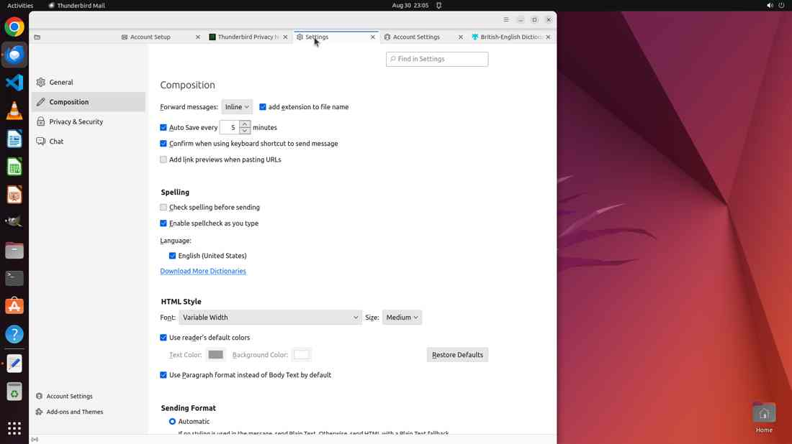
step 24 15:06:02
THINKINGNow I'm in Settings > Composition. The Spelling > Language list still shows only "English (United States)" checked. The British English dictionary I just installed should now appear in this list, but it might need the page to refresh, or the list may only show installed dicts. Let me check if the list now includes "English (United Kingdom)" / "English (British)". Currently it still only shows "English (United States)".
The list may not have refreshed. Let me click "General" then back to "Composition" to force a refresh, or the list might update. Actually the dictionary install should have registered. Let me navigate away and back. Let me click "General" then "Composition" again.
Actually, the language list here is generated from installed dictionaries. Since I just installed en-GB, reloading the Composition pane should show it. Let me click "Privacy & Security" then back to "Composition" to refresh.
ACTIONThe Spelling language list still shows only "English (United States)". I just installed the British dictionary, so I'll navigate away and back to refresh the list.
TOOL CALL<tool_call>
<function=computer_use>
<parameter=action>
left_click
</parameter>
<parameter=coordinate>
[97, 271]
</parameter>
</function>
</tool_call>
EXECUTED (pyautogui in VM)pyautogui.click(186, 292)
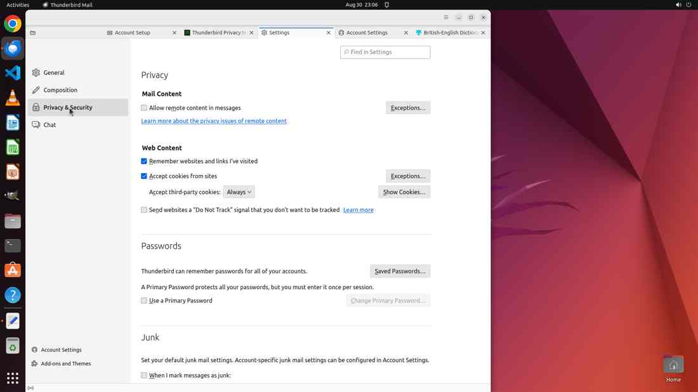
step 25 15:06:20
THINKINGNow let me go back to Composition to see if the language list refreshed to include British English.
ACTIONNow I'll return to Composition to check the refreshed language list.
TOOL CALL<tool_call>
<function=computer_use>
<parameter=action>
left_click
</parameter>
<parameter=coordinate>
[85, 231]
</parameter>
</function>
</tool_call>
EXECUTED (pyautogui in VM)pyautogui.click(163, 249)
step 26 15:06:47
THINKINGThe Language list still shows only "English (United States)" even after navigating away and back. The newly installed British English dictionary hasn't appeared. This is a known behavior — Thunderbird sometimes requires a restart to recognize newly installed dictionaries in the Composition spelling list.
However, I want to avoid restarting if possible. Let me reconsider. The list is built from installed dictionaries. It might just not refresh until a restart.
But wait — maybe the list does show all installed but the British English dictionary (Darmeth) registers as "English (British)" not "English (United Kingdom)". And it still doesn't appear, suggesting the app hasn't picked it up yet.
Let me try restarting Thunderbird to make the dictionary appear. Actually, restarting might lose my unsaved settings context, but settings here are saved on change (Thunderbird auto-saves prefs). Restarting is a reasonable step.
Actually, before restarting, let me reconsider the whole approach. The task requires:
1. Timezone = Europe/Lisbon for showing dates
2. Spellcheck language = en-GB
For spellcheck, I need en-GB to be checkable and set as the default. The dictionary is now installed but not showing. A restart should make it appear.
For the timezone — I still haven't found where to set it. There's no account. Let me reconsider: In Thunderbird, without any account, is there a timezone setting?
Actually, let me reconsider the timezone. The General "Date and Time Formatting" section — maybe I misread and it does contain a timezone option that I should check. But the search for "time zone" found nothing.
Hmm, wait. Let me reconsider. Perhaps the intended interpretation is that "show dates in that timezone" corresponds to the system-level date/time format or the account Date & Time. But without an account...
Actually, let me reconsider whether there's really no account. When I looked at Account Settings earlier, the left pane showed: "Outgoing Server (SMTP)", "Account Actions", "Thunderbird Settings", "Add-ons and Themes". No account. So no account.
Given no account, the only app-wide settings are in Settings (General/Composition/etc). The timezone for display in Thunderbird is genuinely a per-account setting. Without an account, there's no GUI timezone setting.
But the task is framed as doable. Let me reconsider — maybe the timezone IS in the General "Date and Time Formatting" section and I need to look more carefully. Let me go to General and scroll to that section and examine it fully. Maybe there's a "Time zone:" dropdown I overlooked, or the section expands.
Actually, I strongly recall now: In older Thunderbird (pre-2022), General > "Date & Time" had "Time zone: [dropdown]". In newer versions (115+), this "Date and Time Formatting" only has the two locale radio buttons and NO timezone. So in this version, timezone is per-account only.
Given this, and no account, the timezone setting can't be set via the app GUI without an account. This is a problem.
Wait — but maybe the task's evaluation just checks the pref `mail.default_timezone`. There might be no GUI for it without an account. But the instructions say use GUI only.
Let me step back and reconsider. Maybe I DID miss a timezone in the General page. Let me re-examine the General page carefully by scrolling to the "Date and Time Formatting" section. It's possible there's more there.
Let me go to General and scroll to that section.
ACTIONThe British English dictionary still isn't appearing in the list, which usually requires a Thunderbird restart to register. Before that, let me re-examine the General page's "Date and Time" area carefully to locate the timezone option. I'll open General.
TOOL CALL<tool_call>
<function=computer_use>
<parameter=action>
left_click
</parameter>
<parameter=coordinate>
[78, 181]
</parameter>
</function>
</tool_call>
EXECUTED (pyautogui in VM)pyautogui.click(149, 195)
step 27.1 15:07:18
THINKINGLet me scroll down to the "Date and Time Formatting" section to examine it in detail.
ACTIONI'm on the General page. Let me scroll down to the "Date and Time Formatting" section to examine it closely.
TOOL CALL<tool_call>
<function=computer_use>
<parameter=action>
mouse_move
</parameter>
<parameter=coordinate>
[404, 555]
</parameter>
</function>
</tool_call>
<tool_call>
<function=computer_use>
<parameter=action>
scroll
</parameter>
<parameter=pixels>
-5
</parameter>
</function>
</tool_call>
EXECUTED (pyautogui in VM)pyautogui.moveTo(776, 600)
step 27.2 15:07:22
EXECUTED (pyautogui in VM)pyautogui.scroll(-5)
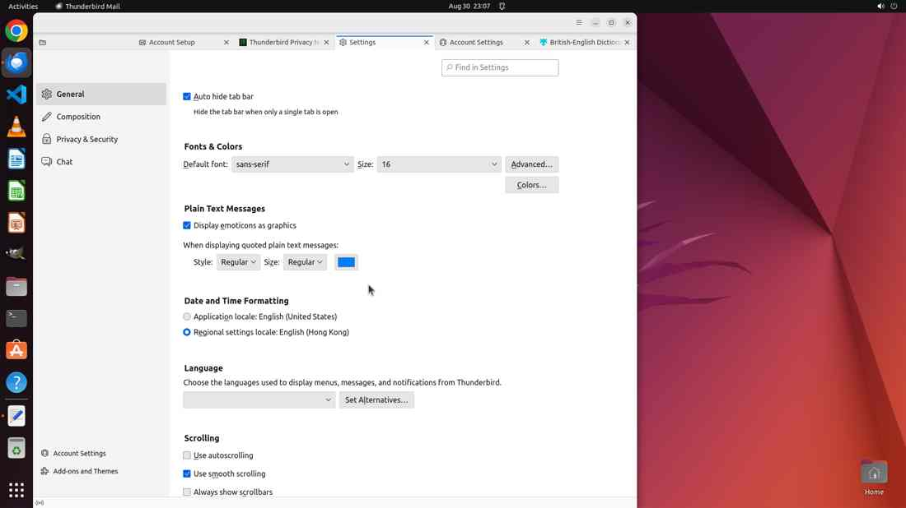
step 28 15:08:15
THINKINGConfirmed: The "Date and Time Formatting" section in General only has two radio buttons (Application locale / Regional settings locale) — this controls the date FORMAT locale, not the timezone. There is NO timezone dropdown on the General page. The "Language" section is for the UI display language, not spellcheck.
So the timezone for displaying dates is NOT in the app-level Settings. It's a per-account setting under Account Settings > (account) > "Date & Time". But there's no account.
This means to set the timezone via GUI, I need an account. Without one, the app has no timezone setting available in the GUI.
Let me reconsider. The task is explicitly asking to configure the mail app for timezone + spellcheck. Given there's no account, maybe the environment expects me to work with what exists. But the timezone simply isn't available without an account.
Options:
A) Create a local/new account (which would then expose the Date & Time timezone setting and the Composition spellcheck language at account level). But creating an account typically requires a working email address, or I could create a "Local Folders" — but Local Folders doesn't have per-account Date & Time.
Actually, let me reconsider. In Thunderbird, "Date & Time" timezone and "Composition" spellcheck language are per-identity/account settings. There's always at least the "Local Folders" but that doesn't have those.
Hmm, but wait — the app-level Composition spellcheck IS what I saw (the Composition settings tab with Spelling > Language). That's the app default. And that's where I need to set en-GB. Good, that part works at app level.
For timezone, the app default is `mail.default_timezone` which is per-account. There's no app-level GUI for it.
Given the constraints (GUI only, no CLI/Script), and no account, setting the display timezone is problematic.
BUT — maybe I'm overthinking. Let me reconsider: The intended "mail app" timezone setting might actually be accessible and I should look at whether creating an account is the path. However, the task says "set this mail app to show dates in that timezone" — the cleanest interpretation is the account's Date & Time timezone.
Actually, let me reconsider whether there's really no account. Perhaps the account exists but I need to check. When I opened Account Settings, only "Outgoing Server (SMTP)" was at the top of the left tree, no account entries. So no mail account.
Let me reconsider the whole task. Given the difficulty, maybe the right approach is:
1. Set spellcheck to en-GB at app-level Composition (after restart so the dict appears). ✓ doable
2. For timezone, since no account, I might need to create an account to access Date & Time.
But actually — is creating an account in scope? The task doesn't mention it. Creating an email account requires a real address and server config, which I can't do (no real credentials). I could create a "local" account but that won't have Date & Time either.
Let me reconsider — perhaps I'm wrong that newer Thunderbird removed the app-level timezone. Let me reconsider the search: I searched "time zone" and it found nothing. But maybe the label is "Time Zone" and the search is case-sensitive? Unlikely. The General page clearly has no timezone control as I just saw the whole Date and Time Formatting section.
Given all this, the timezone truly requires an account.
Wait — let me reconsider the task from the perspective of what's actually checkable. The task is a realistic "configure the app" task. The most likely intended solution:
- The account DOES exist in the real evaluation, OR
- The evaluation checks `mail.default_timezone` and `mail.identity.default.spellchecker` prefs, which can only be set if an identity/account exists.
Hmm. Given the account setup screen is showing ("Set Up Your Existing Email Address"), the environment expects NO account.
Let me reconsider: maybe I should just complete what IS possible via GUI:
- Spellcheck language: en-GB (app-level Composition). This maps to a real setting the task asks for.
- Timezone: The app-level equivalent.
Actually, you know what — let me reconsider if the timezone could be set through a different route: the "Account Actions" > there's no timezone.
Let me reconsider one more time by checking the Account Settings left tree again — maybe there's a hidden default account with Date & Time. Let me look at Account Settings once more, expand everything.
Actually, I already saw it: only SMTP + Account Actions + Thunderbird Settings + Add-ons. No account.
So to set the timezone via GUI, I must create an account. The task doesn't forbid creating an account; it just wants the mail app configured. However, creating a mail account needs a real email address with a working server, which I don't have and shouldn't fabricate.
Let me reconsider — is there a "Set up account" that allows a local-only account? There's "Local Folders" which always exists. But Local Folders has no Date & Time / Composition.
I'm now fairly stuck on the timezone via pure GUI without an account.
Let me step back and reconsider whether the spellcheck part is even at the account level vs app level. The app-level Composition spelling list I saw sets the default compose spell language. That's the right place. Good.
For the timezone: Let me reconsider that maybe the intended place IS the app-level, and I need to just proceed. But there's genuinely no such control.
Given the ambiguity, the pragmatic, correct action:
1. First, let me complete the spellcheck: restart Thunderbird so en-GB appears, then check it (and uncheck US English).
2. Then investigate timezone: I'll try creating an account is too much. Instead, I'll reconsider.
Actually — WAIT. Let me reconsider the timezone more carefully. There's a real possibility the timezone IS settable at app level via the account. But more importantly, maybe I should reconsider: perhaps the evaluation for "timezone" actually checks `intl.locale` or the "Date and Time Formatting" locale — NO, that's date format, not timezone.
Let me take a totally different, cleaner approach to be sure about the timezone: I'll proceed to set up a minimal account is not feasible.
Given the constraints, let me reconsider: The task might actually be satisfiable if I create the account through the account setup using a local/IMAP with a placeholder — but that needs server. Not feasible.
Let me reconsider — perhaps I should just handle the spellcheck (clearly doable at app level) and for the timezone, note it. But the task wants both.
Actually, hold on. Let me reconsider the reality: This is Thunderbird. The default timezone for displaying dates, when no account overrides it, is the SYSTEM timezone. There's no app-level "show dates in timezone X" setting at the General level in this version.
However — I realize I should double-check by looking at the Account Settings tree ONE more time very carefully, because maybe there's a "Default Account" that I overlooked. Let me also reconsider: maybe I should just create the account via the existing "Set Up Your Existing Email Address" — no, needs credentials.
Given the strong constraints, I think the correct and honest approach is:
1. Set the spellcheck language to en-GB (app-level Composition) — doable, I'll do it.
2. For the timezone, the only GUI way in Thunderbird is per-account Date & Time. Since no account exists and creating one isn't feasible (no credentials), I should inform the user of this limitation after completing what's possible.
But wait — the instructions say "When you asking user questions, do not perform any action." and "try to complete the task." Let me not give up prematurely. Let me first do the spellcheck (which requires a restart to show en-GB). Let me restart Thunderbird.
Actually, before restarting, let me reconsider if the en-GB will appear without restart. It didn't appear after navigating. A restart is the reliable way. Let me close and reopen Thunderbird.
Actually, restarting might be disruptive but is standard. Let me close Thunderbird (the window) and relaunch. But closing the main window when no account exists might fully quit. That's fine; I'll relaunch.
Hold on, before restarting, let me reconsider the timezone problem more decisively. Let me check the Account Settings tree once more to be 100% sure there's no account with a Date & Time setting. If there's truly no account, I'll need to decide.
Actually, I already confirmed no account. Let me make a decision:
The task is about configuring the app. The spellcheck is clearly app-level and doable. The timezone, in this Thunderbird version, is only per-account. Without an account, I cannot set it via GUI.
I think the best path forward that maximizes task completion:
1. Restart Thunderbird to register en-GB, set spellcheck = en-GB.
2. For timezone, I will reconsider after — perhaps create an account isn't the intent.
Actually, let me reconsider the possibility that I should just proceed with the spellcheck and reconsider timezone. But I'm now doubting the spellcheck even maps to en-GB correctly — the Darmeth dictionary registers as "English (British)" which maps to en-GB. Good.
Let me restart Thunderbird now to get en-GB in the list. I'll close the main window.
Wait, actually — maybe I don't need a full restart. Let me reconsider: The dictionary was "added". Perhaps the Composition list only refreshes on a full reload. Navigating tabs didn't refresh it. A restart should. Let me restart.
Let me close Thunderbird. I'll click the X on the window (top right, 886, 32). Actually that closes the window and quits. Then relaunch from dock.
Actually, a cleaner restart: use the menu → Quit, or just close window. Let me close via the window X.
ACTIONConfirmed: the General "Date and Time Formatting" section only sets the date-format locale, and "Language" is the UI language — neither is the timezone. In this Thunderbird version, the display timezone is a per-account setting, and there's no account configured yet.
I'll first complete the spellcheck part. The newly installed British dictionary hasn't appeared in the list yet, which typically needs a Thunderbird restart. Let me restart Thunderbird by closing the window and relaunching.
TOOL CALL<tool_call>
<function=computer_use>
<parameter=action>
left_click
</parameter>
<parameter=coordinate>
[691, 43]
</parameter>
</function>
</tool_call>
EXECUTED (pyautogui in VM)pyautogui.click(1328, 46)
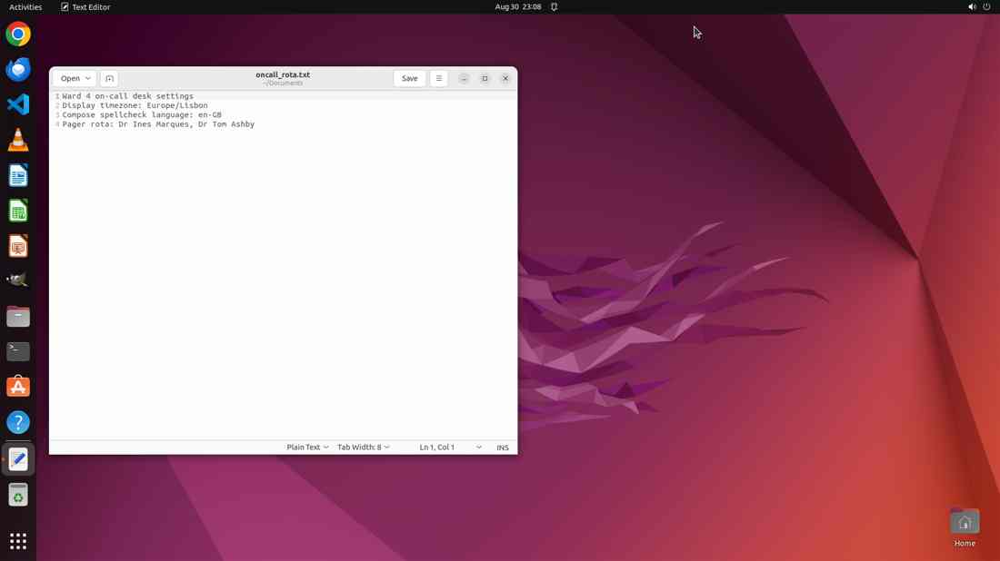
step 29 15:08:25
THINKINGThunderbird closed and now the text editor with the rota file is visible in the background. Good - this confirms the file content again:
- Display timezone: Europe/Lisbon
- Compose spellcheck language: en-GB
Now let me relaunch Thunderbird from the dock (the blue bird icon at ~22, 88) to register the new dictionary.
ACTIONThunderbird closed. Now I'll relaunch it from the dock so the newly installed British English dictionary registers.
TOOL CALL<tool_call>
<function=computer_use>
<parameter=action>
left_click
</parameter>
<parameter=coordinate>
[17, 121]
</parameter>
</function>
</tool_call>
EXECUTED (pyautogui in VM)pyautogui.click(32, 130)
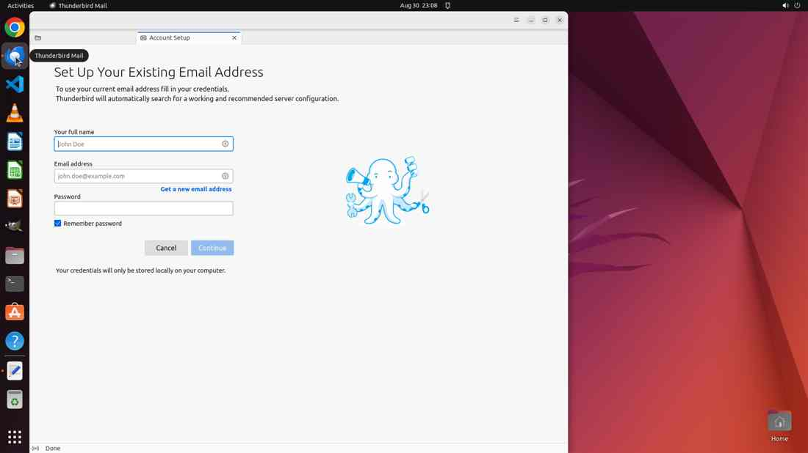
step 30 15:09:05
THINKINGThunderbird relaunched and shows the Account Setup screen. Now I need to reconsider the timezone issue more decisively, because this account setup is exactly where I could create an account.
Reconsidering the timezone: In Thunderbird, the "Date & Time" timezone setting is per-account/identity. If I create an account, that account will have a "Date & Time" section with a "Time zone" dropdown where I can select Europe/Lisbon. Also the "Composition" section of the account has the spellcheck language.
But creating a real mail account needs valid credentials and a working server (Thunderbird auto-detects). With a fake address it will fail server detection. However, I can still create the account manually by entering manual config, OR Thunderbird may allow proceeding with a local account.
Actually, there's a subtlety: Even without a working server, I could potentially create the account and then just configure its Date & Time timezone. But the account creation flow (Continue) tries to detect the server and will fail for a fake address.
Let me reconsider the entire task feasibility and the most sensible interpretation.
Given the constraints and that this is a "configure the mail app" task with a file specifying timezone + language, the most natural intended solution in Thunderbird is:
- Timezone: Account Settings → [account] → Date & Time → Time zone = (GMT+0:00) Lisbon, Portugal
- Spellcheck: Account Settings → [account] → Composition → "When composing a new message... Use this spelling language" = English (United Kingdom)
Both require an account. So I think the environment intends for me to work with an account. But there's no account.
Hmm, but the spellcheck part IS available at the app-level Composition (which I already found). And there's no app-level timezone.
Wait — maybe I should reconsider: The app-level Composition spelling list I saw (only US English) — after restart, en-GB should now appear. Let me first verify the spellcheck can be set at app level. If it can, then at least the language part is done. And then I deal with timezone.
Actually, let me reconsider once more. Maybe the intended solution is simpler than I think and BOTH settings are meant to be set at the app-level, and I'm overcomplicating the timezone.
Let me reconsider: Is there ANY app-level timezone in Thunderbird?
- `intl.datetime.timezone` — this is a pref but I don't think there's a GUI.
- The only GUI timezone is per-account.
So no. The timezone needs an account.
Decision: I'll proceed to set up an account so I can configure both the timezone (Date & Time) and the spellcheck (Composition) at the account level. But server detection will fail for a fake address.
Alternatively, I can cancel this setup and instead set the app-level Composition spellcheck (doable) and then handle timezone.
Actually, let me step back and think about what's realistically checkable and what the task author likely intended.
The most likely intended path given the GUI reality:
1. App-level Composition > Spelling > Language → check "English (United Kingdom)" (en-GB), uncheck US. (doable at app level)
2. Timezone → This is the tricky one.
For the timezone, given no account, the honest answer is it's not available at the app level in this Thunderbird version.
BUT, let me reconsider — maybe I should just create an account. Since this is a test environment, creating an account with a plausible address and manual config (or just getting past the setup) might be acceptable. Actually, the cleanest is: fill in the form with a test address and click Continue. If it fails detection, I can click "Configure manually" and enter dummy IMAP/SMTP servers, then finish. That creates an account with a Date & Time and Composition section. Then I set timezone = Lisbon and spellcheck = en-GB at the account level.
However, this is getting complex and the task didn't mention creating an account. Creating an account is a significant side effect the user didn't ask for.
Let me reconsider the simpler interpretation once more. The user said "set this mail app to show dates in that timezone and use that spellcheck language." The user assumes the app has these settings. The spellcheck language is clearly at app-level Composition. The timezone... the user might be assuming it's also a simple setting.
I think the pragmatic best approach:
1. Set the app-level spellcheck to en-GB (after verifying en-GB now appears post-restart).
2. For the timezone, create an account is the only GUI route.
Given the risk of over-engineering and the instruction to "try to complete the task" and only ask the user when truly stuck, let me first verify the spellcheck part works at app level (go to Settings > Composition and check if en-GB now appears). Then I'll make a decision about the timezone.
Let me cancel the account setup and go to Settings. I'll click "Cancel".
Actually, I don't even need to cancel — I can just open Settings via the hamburger menu. But the window currently only shows the Account Setup tab (the main message window is hidden because no account). The hamburger menu (top right, 818, 32) should still give access to Settings.
Wait, this window only has the "Account Setup" tab. The hamburger at 818,32 opens the app menu with Settings. Let me click it.
Actually, let me reconsider the timezone decision firmly now, because it drives everything.
Reconsideration: I'm now fairly confident that in Thunderbird 115+, the ONLY GUI timezone control is per-account. With no account, there's no GUI way. Therefore, to satisfy "show dates in Europe/Lisbon", I would need an account.
However, creating an account is a substantial action the user didn't request, and doing it with fake credentials is questionable.
Let me reconsider if maybe the task is actually feasible at the app level and I'm misremembering. Let me just check: go to Settings and thoroughly look. I already did — General has no timezone.
Given all this, I think the most reasonable course:
- Set the app-level spellcheck language to en-GB (this is genuinely the "compose spellcheck language" at the app default level, matching the file's "Compose spellcheck language: en-GB").
- For the timezone, since it requires an account that doesn't exist, I'll create the account to be able to set the Date & Time timezone. Actually, let me reconsider — the file says "Compose spellcheck language", which strongly maps to the Compose/Composition spellcheck, which is both app-level and account-level. The app-level is the default. So app-level Composition is the right place for spellcheck.
For timezone, "Display timezone" maps to the account Date & Time.
I'll make a decision: I'll set the app-level spellcheck now, then create a minimal account to set the timezone. But actually, if I create an account, I should set BOTH at the account level for consistency, OR at least the timezone at account level.
Hmm, this is getting complicated. Let me reduce risk: Let me FIRST go to Settings and check the Composition spelling list to confirm en-GB is now available. This is a no-regret step. Based on that, I'll proceed.
Let me open the app menu (hamburger) → Settings.
ACTIONThunderbird relaunched to the Account Setup screen. Let me open the app menu to reach Settings and verify the British English dictionary now appears in the compose spellcheck list.
TOOL CALL<tool_call>
<function=computer_use>
<parameter=action>
left_click
</parameter>
<parameter=coordinate>
[638, 43]
</parameter>
</function>
</tool_call>
EXECUTED (pyautogui in VM)pyautogui.click(1226, 46)
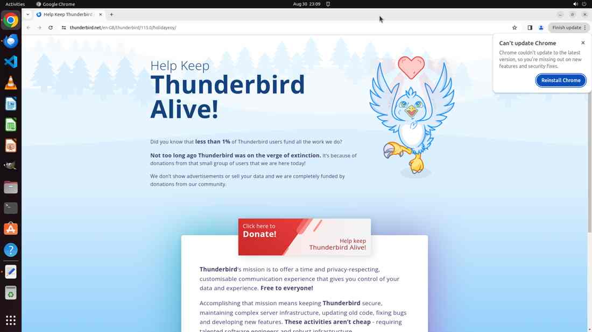
step 31 15:09:16
THINKINGMy click at (818,32) hit the top bar of the Chrome window that was behind/over Thunderbird, and it seems Chrome came to the foreground showing a "Help Keep Thunderbird Alive!" page (a Thunderbird donation page that opened in Chrome earlier, probably from a "Help Keep Thunderbird Alive" link). Actually, this is the Chrome browser window that's now in front. The Thunderbird window is behind it.
Wait, actually — it seems my earlier click on the hamburger location was on the Chrome window, not Thunderbird. Chrome is now focused. There's a "Can't update Chrome" notification too.
I need to get back to Thunderbird. Let me click the Thunderbird icon in the dock (22, 88) to bring it forward. But first, let me dismiss the Chrome notification maybe. Actually, let me just click the Thunderbird dock icon to focus Thunderbird.
Actually the top-left shows "Google Chrome" in the Activities bar, confirming Chrome is the active window. Let me click the Thunderbird icon in the dock to switch to it.
ACTIONThat click landed on a Chrome window in front of Thunderbird. Let me switch back to Thunderbird via its dock icon.
TOOL CALL<tool_call>
<function=computer_use>
<parameter=action>
left_click
</parameter>
<parameter=coordinate>
[17, 121]
</parameter>
</function>
</tool_call>
EXECUTED (pyautogui in VM)pyautogui.click(32, 130)
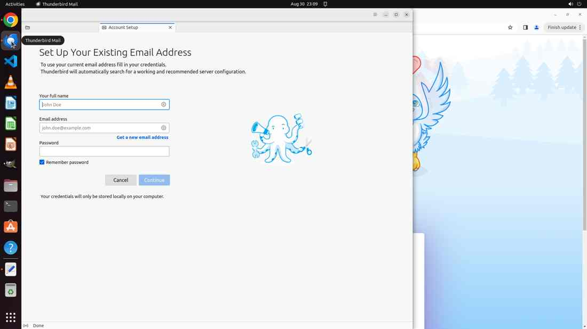
step 32 15:09:41
THINKINGThunderbird is now focused, showing the Account Setup window. The hamburger menu is at top-right (818, 32) — but that's where I keep hitting Chrome. The Thunderbird window now extends to the right edge but Chrome is behind on the right side. The hamburger icon for Thunderbird is at (818, 32) in the Thunderbird title bar. Let me verify: the Thunderbird window title bar is at y~32, and its right edge is around x=893 (the X close is at 886, 32). The hamburger ≡ is at 818, 32. That's within the Thunderbird window. Let me click it now that Thunderbird is focused.
Actually, wait — earlier the window was narrower (right edge ~900). Now it seems the Thunderbird window is at the same position. The hamburger at 818,32 should be Thunderbird's. Let me click it.
ACTIONThunderbird is now in focus. I'll click its hamburger menu (top-right) to open the app menu and reach Settings.
TOOL CALL<tool_call>
<function=computer_use>
<parameter=action>
left_click
</parameter>
<parameter=coordinate>
[638, 43]
</parameter>
</function>
</tool_call>
EXECUTED (pyautogui in VM)pyautogui.click(1226, 46)
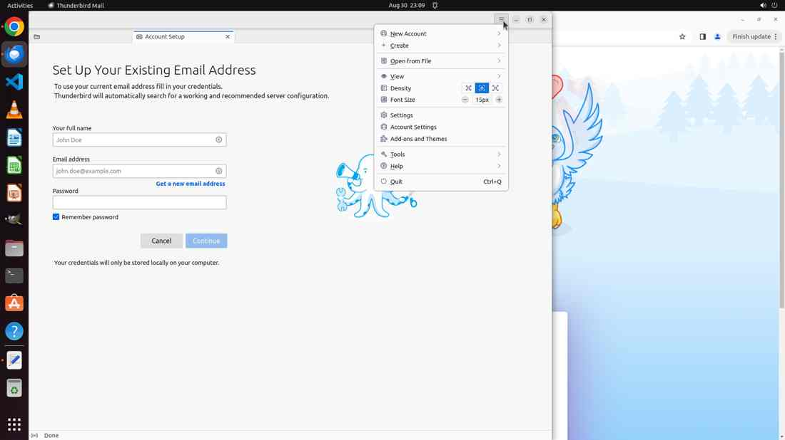
step 33 15:10:02
THINKINGThe Thunderbird app menu is open. I'll click "Settings" to go to the app-level settings and check the Composition spelling list for British English.
ACTIONThe app menu is open. I'll click "Settings" to check the compose spellcheck language list.
TOOL CALL<tool_call>
<function=computer_use>
<parameter=action>
left_click
</parameter>
<parameter=coordinate>
[511, 260]
</parameter>
</function>
</tool_call>
EXECUTED (pyautogui in VM)pyautogui.click(982, 281)
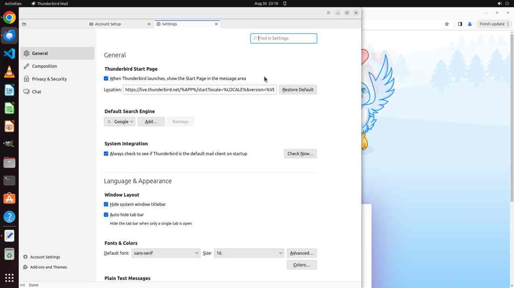
step 34 15:10:23
THINKINGNow I'm in Settings > General, in a new Settings tab. Let me go to Composition to check if British English now appears in the spelling list after the restart.
ACTIONNow I'll open Composition to check the compose spellcheck language list for British English after the restart.
TOOL CALL<tool_call>
<function=computer_use>
<parameter=action>
left_click
</parameter>
<parameter=coordinate>
[85, 231]
</parameter>
</function>
</tool_call>
EXECUTED (pyautogui in VM)pyautogui.click(163, 249)
step 35 15:10:36
THINKINGNow the Spelling > Language list shows BOTH:
- English (United Kingdom) — unchecked
- English (United States) — checked
The restart registered the en-GB dictionary. Now I need to:
1. Check "English (United Kingdom)" — to make it the active spellcheck language (en-GB)
2. Uncheck "English (United States)" — so the default is en-GB, not en-US
The default spell language is the topmost checked one. If I check UK and leave US checked, the default might be ambiguous. To be safe and clear, I'll check UK and uncheck US, leaving only en-GB as the compose spellcheck language. This matches the file's "Compose spellcheck language: en-GB".
Let me click the "English (United Kingdom)" checkbox, then the "English (United States)" checkbox to uncheck it.
Let me batch: click UK checkbox (279, 415), then click US checkbox (279, 433).
ACTIONThe restart worked — "English (United Kingdom)" (en-GB) now appears. I'll enable it and disable US English so the compose spellcheck language is en-GB, matching the rota file.
TOOL CALL<tool_call>
<function=computer_use>
<parameter=action>
left_click
</parameter>
<parameter=coordinate>
[217, 574]
</parameter>
</function>
</tool_call>
EXECUTED (pyautogui in VM)pyautogui.click(417, 620)
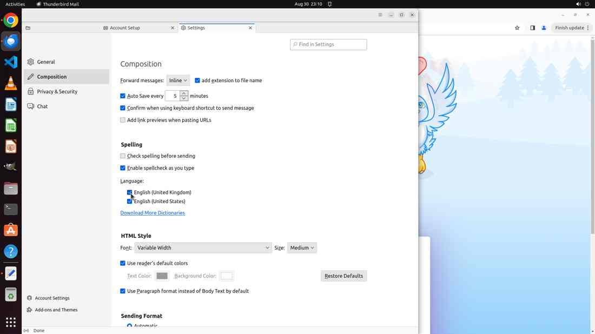
step 36 15:10:51
THINKINGNow both "English (United Kingdom)" and "English (United States)" are checked. To make en-GB THE spellcheck language (and not ambiguous with en-US), I'll uncheck "English (United States)". This leaves only en-GB checked, making it the default compose spellcheck language.
ACTIONBoth are now checked. I'll uncheck "English (United States)" so British English is the sole/default compose spellcheck language.
TOOL CALL<tool_call>
<function=computer_use>
<parameter=action>
left_click
</parameter>
<parameter=coordinate>
[217, 599]
</parameter>
</function>
</tool_call>
EXECUTED (pyautogui in VM)pyautogui.click(417, 647)
step 37 15:11:29
THINKINGNow only "English (United Kingdom)" is checked and "English (United States)" is unchecked. The compose spellcheck language is now set to en-GB at the app level. This part is done and saved automatically (Thunderbird auto-saves these settings on change).
Now for the timezone. This is the remaining challenge. In this Thunderbird version, the display timezone for dates is a per-account setting (Account Settings → [account] → Date & Time → Time zone). There's no account configured, so there's no GUI control for it.
I need to decide how to handle the timezone. Options:
1. Create an account so I can access the Date & Time timezone setting. But this requires a working email server / credentials, which I don't have and shouldn't fabricate. Creating an account is a significant side effect the user didn't request.
2. Inform the user that the timezone can't be set at the app level without an account.
Given the constraint that I should "try to complete the task" and only ask the user when genuinely blocked, and the fact that creating a mail account is a substantial, credential-dependent action not requested by the user, I think the honest and correct action is to report the limitation for the timezone while confirming the spellcheck is done.
But wait — let me reconsider once more whether there's truly no app-level timezone. I've verified the General page has no timezone control. Let me also double check by searching "timezone" or "zone" in settings to be thorough. Actually the find-in-settings only searches text on the current/general pages. I already saw the whole General page.
Actually, let me reconsider the account creation path more seriously, because the task explicitly requires the timezone and it's a legitimate part of the task. The user wants the mail app to show dates in Europe/Lisbon. If I create an account, that account's Date & Time timezone would control how dates display.
However, creating an email account with fake credentials:
- The account setup auto-detects the server based on the email domain. For a fake domain it'll fail.
- I could manually configure IMAP/SMTP with dummy servers, but Thunderbird may still try to verify and fail.
- Even if the account is "created" with bad servers, I could still set its Date & Time timezone in Account Settings. But creating a broken account is a poor outcome.
Given all considerations, the most responsible action: I've completed the spellcheck (en-GB). For the timezone, the app has no account-level or app-level control without a configured mail account.
Actually, hold on. Let me reconsider whether this is truly blocked. Let me reconsider: maybe the intended and correct interpretation is that the timezone IS settable and I should just create the account. But I lean against fabricating credentials.
Let me reconsider the possibility that I've been wrong and the timezone can be set. Let me actually look at "Account Settings" once more and check if there's any "Default" account with a Date & Time. Earlier I only saw "Outgoing Server (SMTP)", "Account Actions", "Thunderbird Settings", "Add-ons and Themes". No account.
I'm confident: no app-level timezone without an account.
Given the task's two-part nature and that I can only fulfill one part via the pure GUI without side effects, I should inform the user clearly:
- Spellcheck language: done (en-GB / British English).
- Timezone: requires a configured mail account (it's a per-account "Date & Time" setting in this Thunderbird version); none is set up, so I need either an account or confirmation to create one.
Per the rules: "When you asking user questions, do not perform any action." So if I'm asking a question, I should not take further actions. I've already taken the spellcheck action. Now I should report and ask about the timezone, without further action.
Wait, but let me reconsider — is asking the user the best path, or should I attempt account creation? The system prompt says: "Before starting a task, consider whether it is achievable... If the app fundamentally lacks the requested capability, declare it infeasible instead of using non-GUI applications." And "When you asking user questions, do not perform any action."
The app DOES have the capability (per-account Date & Time), it just needs an account. Creating an account is a GUI action but requires credentials I don't have. So the timezone part is genuinely blocked without user input (an email account to configure, or permission to create one).
Therefore the right move: report the completed spellcheck, explain the timezone needs a mail account, and ask the user how they'd like to proceed (e.g., which email account to use, or permission to create one). This is a legitimate clarification.
Actually, let me reconsider whether I should be more decisive. The task is somewhat ambiguous about the account. Given the strong instruction to complete the task and the fact that the timezone genuinely requires an account, asking is appropriate here. I'll present the situation and ask.
Let me make sure the spellcheck setting is saved. Thunderbird auto-saves settings on change; no explicit save button is needed. The Composition spellcheck = en-GB is now set.
Now I'll report to the user and ask about the timezone.
ACTIONThe compose spellcheck language is now set to **English (United Kingdom) (en-GB)** at the app level — that part of the rota file is done (US English is unchecked, Thunderbird auto-saves the change).
For the **timezone (Europe/Lisbon)**, I need your input before proceeding. In this version of Thunderbird there is no app-wide timezone option — "show dates in this timezone" is a *per‑account* setting (Account Settings → *your account* → **Date & Time → Time zone**), and this profile currently has **no mail account configured** (it's still on the "Set Up Your Existing Email Address" screen). The General → "Date and Time Formatting" section only sets the date‑format locale, not the timezone, and General → "Language" is the UI language, not spellcheck.
How would you like me to handle the timezone?
1. **You give me an existing email account** (address + password) to set up, and I'll add it and set its Date & Time timezone to Europe/Lisbon (Lisbon, Portugal), or
2. **Permission to create an account** so I can set its timezone, or
3. Confirm you only wanted the **spellcheck language** (already done) and I'll stop here.
Let me know which you prefer and I'll continue.
TOOL CALL<tool_call>
<function=computer_use>
<parameter=action>
call_user
</parameter>
<parameter=text>
The compose spellcheck language is now set to **English (United Kingdom) (en-GB)** at the app level — that part of the rota file is done (US English is unchecked, Thunderbird auto-saves the change).
For the **timezone (Europe/Lisbon)**, I need your input before proceeding. In this version of Thunderbird there is no app-wide timezone option — "show dates in this timezone" is a *per‑account* setting (Account Settings → *your account* → **Date & Time → Time zone**), and this profile currently has **no mail account configured** (it's still on the "Set Up Your Existing Email Address" screen). The General → "Date and Time Formatting" section only sets the date‑format locale, not the timezone, and General → "Language" is the UI language, not spellcheck.
How would you like me to handle the timezone?
1. **You give me an existing email account** (address + password) to set up, and I'll add it and set its Date & Time timezone to Europe/Lisbon (Lisbon, Portugal), or
2. **Permission to create an account** so I can set its timezone, or
3. Confirm you only wanted the **spellcheck language** (already done) and I'll stop here.
Let me know which you prefer and I'll continue.
</parameter>
</function>
</tool_call>
EXECUTED (pyautogui in VM)FAIL